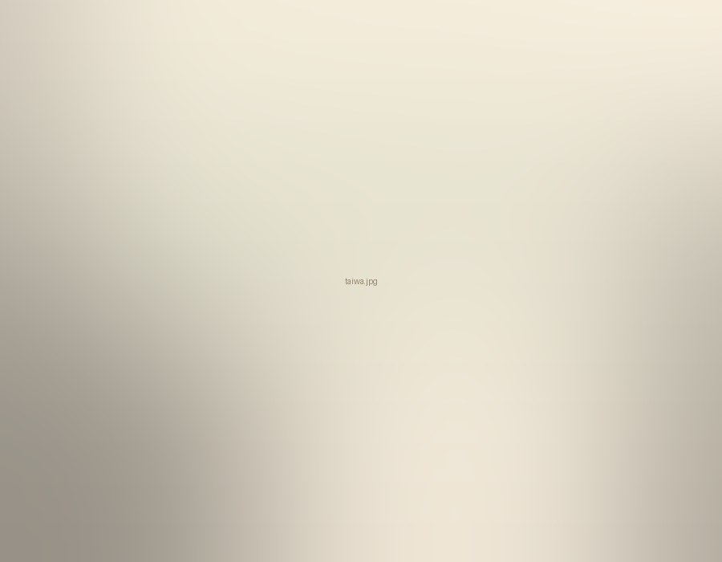
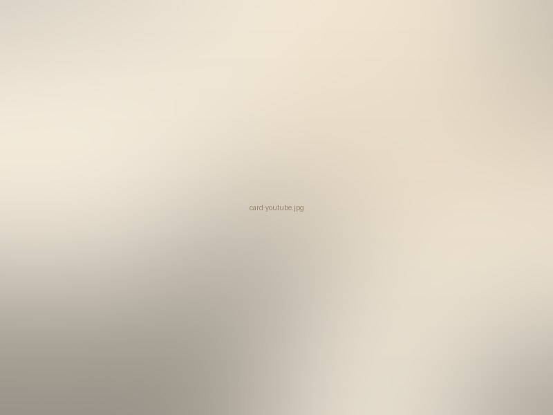
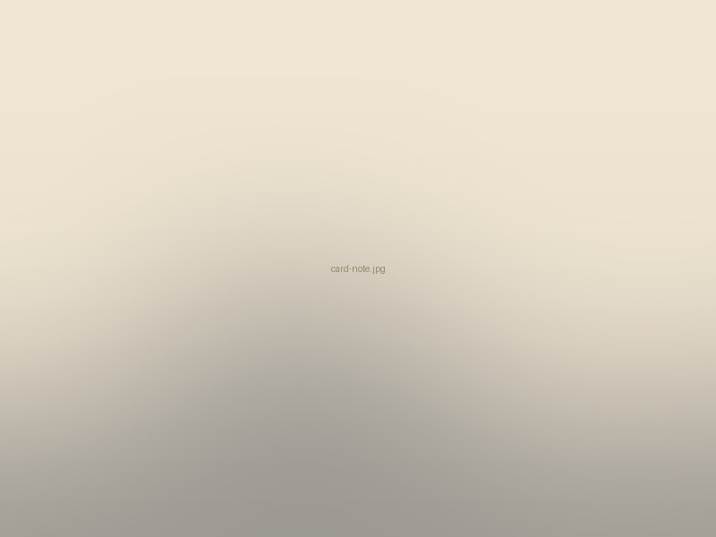
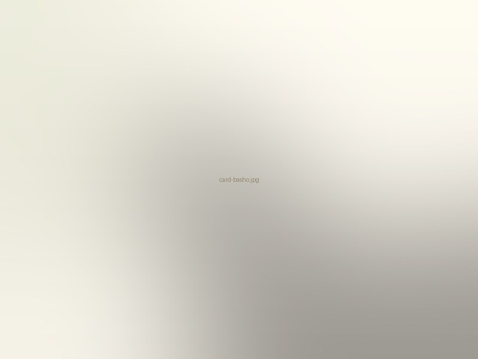
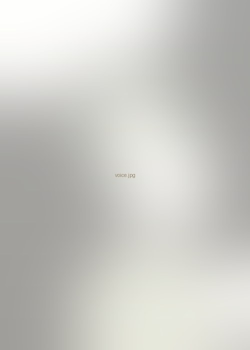

やりたいことに、
体がついてくる人生を。
頭で考える人生から、
からだが納得する人生へ。
こんなふうに感じることはありませんか。
頑張っているのに、
前に進めない
休んでも、
回復した気がしない
本当は、もっと
挑戦したい
その原因は、あなたが悪いわけではなく、
「心と体のつながり」が一時的にずれているだけかもしれません。
体が安心すると、変わりはじめます。
わたしは、そのきっかけを一緒につくる伴走者でありたいと思っています。

はじめの対話（30分・無料）
一緒に、今の体の状態を確認してみましょう。
話してみることで、
今まで気づかなかったことが見えてくるかもしれません。
次の一歩は今の自分を知ることから。

YouTube
セルフケアや考え方を
動画でお届けしています。

note
想いや気づき、日々のことを
綴っています。

施術場所
大津・大阪・東京で
お会いできます。

お客様の声
お客様の声は、ただいま準備中です。
実際に受けてくださった方の言葉を、掲載のご許可をいただいたうえで、順にご紹介していきます。